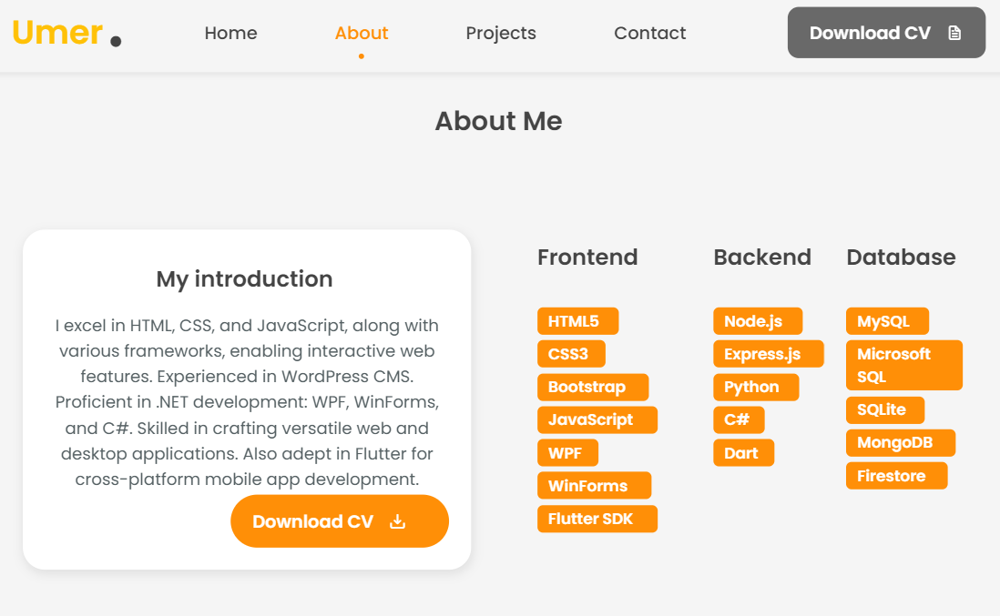
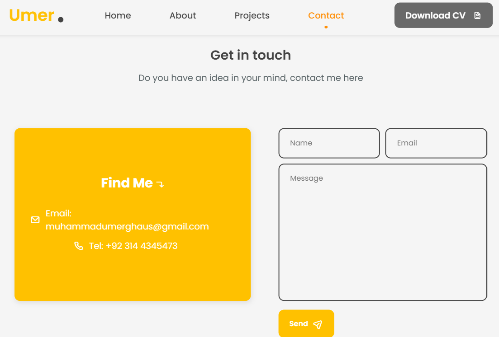

Web Development Projects


Portfolio Redesign
For my latest project, I embarked on a journey to redesign my personal portfolio website. This endeavor allowed me to showcase my skills as a web developer while also improving the overall user experience and aesthetics of my online presence.
Key Objectives:
- Enhance Visual Appeal: I aimed to create a visually stunning and modern design that reflects my personality and professionalism.
- Improve User Navigation: I focused on optimizing the navigation flow, ensuring seamless access to various sections of the website.
- Showcase Skills: I utilized creative layouts and interactive elements to highlight my technical skills, projects, and achievements.
- Mobile Responsiveness: With the increasing use of mobile devices, I prioritized mobile responsiveness to ensure a consistent and enjoyable experience across all screen sizes.
- Performance Optimization: Implementing best practices in web development, I optimized the website for fast loading times and smooth performance.
Technologies Used:
- HTML5
- CSS3 (including Flexbox and Grid)
- JavaScript (for interactivity and animations)
- Responsive Design Principles
- Bootstrap Framework
Challenges Faced:
- Design Iterations: Finding the perfect balance between creativity and functionality required multiple design iterations and feedback sessions.
- Cross-Browser Compatibility: Ensuring consistent rendering across different browsers posed some challenges, especially with CSS styling.
- Performance Tweaks: Optimizing images, scripts, and code structure to achieve optimal performance without compromising on design.
- Content Organization: Striking the right balance between showcasing my work and providing relevant information about myself in a concise manner.
Achievements:
- Successfully launched the redesigned portfolio, receiving positive feedback from peers and potential clients.
- Improved user engagement metrics such as bounce rate and time spent on the website.
- Enhanced brand image and professionalism, leading to increased inquiries and job opportunities.
The portfolio redesign project was not only an opportunity to demonstrate my technical skills but also a journey of self-improvement and creative expression. It stands as a testament to my dedication to continuous learning and growth as a web developer.